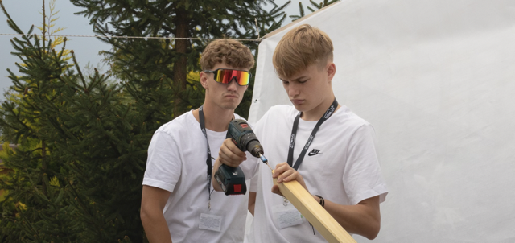
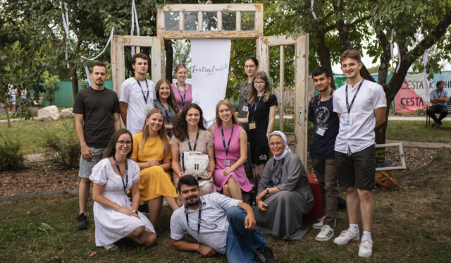
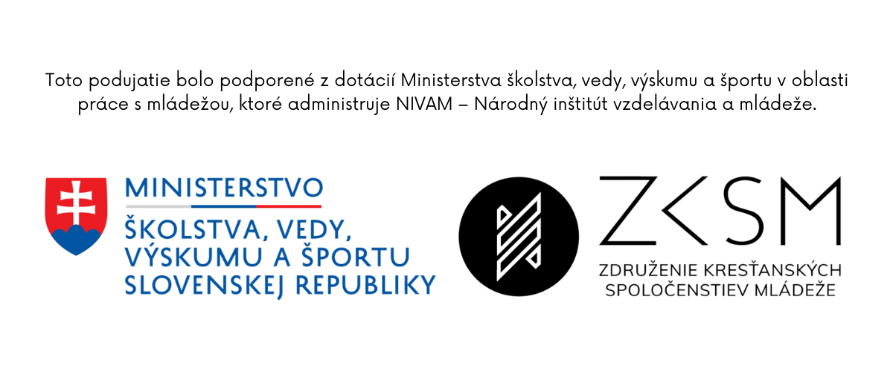
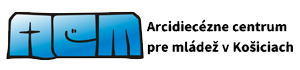

Kontaktuj nás
Máš otázky? Sme tu pre teba!
Telefón
Adresa
Hlavná 94
Vysoká nad Uhom
072 14 Pavlovce nad Uhom
Slovensko
„Pane, dobre je nám tu.“
(Mt 17, 4)
Aj ty si sa chcel už toľko krát zmeniť... A nešlo to? Znova a znova prehra, pád a zdá sa, že to celé je len začarovaný kruh nevydarených pokusov. Koľkokrát sme chceli byť už iní, ale znova sme boli tam, kde na začiatku... No premena nie je v našej moci! Prichádza ako dar, ak sa necháme viesť Ježišom ako učeníci. Iba Ježiš nás môže vyviesť z údolí našich dní do svetla, v ktorom môžeme byť skutočne premenení. A práve to môžeš zažiť aj Ty na tomto mieste – plnom premenení. Dobre je nám tu v Domčeku, pri zdroji svetla, v ktorom spoluobjavujeme, že aj my sa môžeme stať svetlom sveta!
Pripravujeme
Program sa môže ešte priebežne upravovať
14. August 2026
15. August 2026
16. August 2026
17. August 2026
Vyber si akým spôsobom sa chceš zúčastniť festivalu.

Všetky naše akcie sú postavené na nezištnej službe druhým. Pridaj sa aj ty do našej dobrovoľníckej rodiny.
Dobrovoľník na festivale od 17 rokov.
Grátis dúchovná obnova pred festivalom a to od utorka do štvrtka
Možnosť uplatniť študentskú alebo ZKSM zľavu.
Prihlásiť sa
Festival od piatka do pondelka v super spoločenstve, radosti a s krásnymi zážitkami.
Účastník festivalu od 15 do 35 rokov.
Možnosť uplatniť študentskú alebo ZKSM zľavu.
Prihlásiť saĎakujeme našim partnerom za podporu Festivalu Radosti.


Na Festival radosti pozývame mladých od 15 – 35 rokov. Ak ešte nemáš 18 rokov, je potrebné nám po registrácii zaslať Potvrdenie rodiča, resp. právneho zástupcu.
Zľava pre študentov a členov ZKSM je 10€.
Účastníci sa môžu prihlásiť do 1.8.2026. Pre dobrovoľníkov je termín do 28.7.2026.
Ak sa po registrácii nemôžeš Festivalu radosti zúčastniť, napíš nám na pute@domcek.org, alebo nám napíš do správy na FB alebo IG.
Ak máš minimálne 17 rokov a bol si účastníkom na minimálne 1 púti organizovaných Domčekom, určite ťa pozývame do služby.
Na Festivale radosti bude samozrejme strava zabezpečená a to od piatka obeda. Ak máš nejakú diétu, napíš nám to do poznámky pri registrácii.
Áno, ubytovanie je v cene Festivalu radosti. Je nutné si ale so sebou priniesť spacák.
Spacák, prezuvky, hygienické a osobné potreby, lieky. Zvlášť zdôrazňujeme, aby si si nezabudol(a) priniesť vlastnú fľašu na vodu, pokrývku hlavy, repelent a opaľovací krém pre bezpečné a pokojné prežitie týchto horúcich dní.
Po registrácii dostaneš prístup k zdieľanej tabuľke, kde môžeš odvoz zabezpečiť sebe, alebo odvoz môžeš ponúknuť práve ty.
V pondelok po skončení programu bude v prípade dostatočného záujmu zabezpečený odvoz do Michaloviec autobusom o 11:00 hod. Príplatok na mieste 3€.
Ak si sa nedozvedel odpovede na tvoje otázky v tejto sekcii, neváhaj nás kontaktovať na pute@domcek.org, alebo nám napíš do správy na FB alebo IG.
Máš otázky? Sme tu pre teba!
Hlavná 94
Vysoká nad Uhom
072 14 Pavlovce nad Uhom
Slovensko